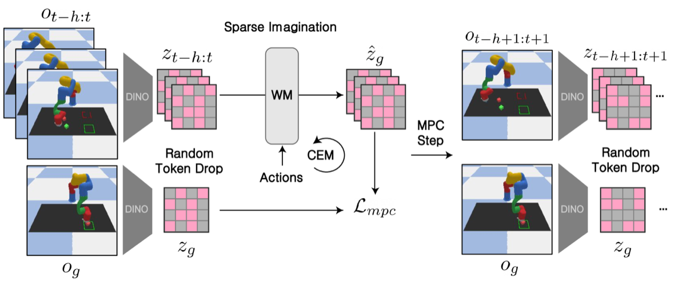

Why it matters왜 중요한가
The bottleneck of visual world-model planning is not the encoder — it's imagining the same scene hundreds of times.
비주얼 월드모델 계획의 병목은 인코더가 아니라, 같은 장면을 수백 번 상상하는 일이다.
Latent world models like Dreamer compress a whole image into one vector — fast, but they discard the fine spatial detail that precise manipulation needs. The newer wave (DINO-WM) keeps every ViT patch token, which restores spatial precision and zero-shot generalization, but the transformer's self-attention scales quadratically with token count. Since Model Predictive Control re-runs many candidate rollouts at every step, that cost is prohibitive for real-time, resource-constrained robots. The authors' insight: ViT representations are redundant, so the planner doesn't need every token at every instant. Just imagine on a sparse, randomly chosen subset.
Dreamer 같은 잠재 월드모델은 이미지 전체를 한 벡터로 압축한다 — 빠르지만 정밀 조작에 필요한 세밀한 공간 정보를 버린다. 최신 흐름(DINO-WM)은 모든 ViT 패치 토큰을 유지해 공간 정밀도와 제로샷 일반화를 되살리지만, 트랜스포머 셀프어텐션이 토큰 수에 제곱으로 커진다. MPC는 매 스텝 여러 후보 롤아웃을 반복 실행하므로, 실시간·자원 제약 로봇에는 그 비용이 치명적이다. 저자들의 통찰: ViT 표현은 중복되어 있어, 플래너는 매 순간 모든 토큰이 필요하지 않다. 무작위로 고른 희소 부분집합만으로 상상하면 된다.

By the numbers핵심 숫자
(173s→82s, 50% drop)PushT 계획 시간
(173s→82s, 50% 드롭)
success (VLA→+planner)실로봇 PickPlace
성공률 (VLA→+플래너)
(50% drop, ~2× faster)LIBERO-10 성공률
(50% 드롭, 약 2배 빠름)
20% for CLS-token (30% drop)Granular 성공률 vs.
CLS 토큰 20% (30% 드롭)
(down from 19.1s)PickPlace 플래너 지연
(19.1s에서 감소)
vs. 0.036 full-attn그룹어텐션 L2 오차 @50% 드롭
vs. 풀어텐션 0.036
Results — sparse keeps the score, drops the clock결과 — 희소화가 점수는 지키고 시간은 줄인다
| Task | Full-Patch | CLS-Token | Sparse Imag. |
|---|---|---|---|
| Granular (success) | 85.0 | 20.0 | 85.0 |
| Rope (success) | 76.7 | 36.7 | 76.7 |
| PushT (time/iter) | 173s | — | 82s |
| LIBERO-10 (success) | 33 | — | 33 |
| LIBERO-10 (episode) | 53.4s | — | 29.7s |
| Real Drawer (success) | 70 | — | 70 |
CLS-token collapses on spatially demanding tasks; Sparse Imagination matches Full-Patch quality at a fraction of the compute. VLA base success on LIBERO-10 was 29% — the planner adds +4pts while running nearly 2× faster than Full-Patch.
CLS 토큰은 공간 요구가 큰 과제에서 붕괴; Sparse Imagination은 적은 연산으로 Full-Patch 품질을 따라간다. LIBERO-10에서 VLA 단독 성공률은 29% — 플래너가 +4pt를 더하면서 Full-Patch보다 약 2배 빠르다.
In one diagram한 장의 그림
Idea: train for sparsity, plan on randomness아이디어: 희소성으로 학습하고 무작위로 계획한다
Randomized Grouped Attention
During training, each frame's tokens are split into two random groups; attention masks let tokens attend only within their group (temporal links preserved). This forces the world model to predict dynamics from arbitrary token subsets, so it stays robust when tokens are missing at inference. Result: 0.016 L2 error at 50% drop vs. 0.036 for a full-attention model.
학습 중 각 프레임의 토큰을 두 무작위 그룹으로 나누고, 어텐션 마스크로 같은 그룹 안에서만 상호작용하게 한다(시간 연결은 유지). 이는 월드모델이 임의의 토큰 부분집합에서 동역학을 예측하도록 강제해, 추론 시 토큰이 빠져도 견고하게 만든다. 결과: 50% 드롭에서 L2 오차 0.016 vs. 풀어텐션 모델 0.036.
Sparse Imagination + CEM
At MPC time a fresh dropout mask discards a fraction p of tokens per rollout, processing only (1−p)N. The CEM planner's robustness absorbs any single bad mask, and resampling each iteration gives unbiased coverage. The dropout ratio p becomes a single knob trading speed for accuracy.
MPC 시 새 드롭아웃 마스크가 롤아웃마다 토큰의 비율 p를 버려 (1−p)N개만 처리한다. CEM 플래너의 견고함이 한 번의 잘못된 마스크를 흡수하고, 반복마다 재샘플링해 편향 없는 커버리지를 준다. 드롭아웃 비율 p가 속도–정확도를 조절하는 단일 손잡이가 된다.
How it works어떻게 작동하나
- Encode with a frozen ViT고정 ViT로 인코딩A frozen DINO-ViT-S/16 turns each observation into N patch tokens; a causal transformer decoder predicts future tokens from history tokens + actions (MSE loss in DINO feature space).고정 DINO-ViT-S/16이 각 관측을 N개 패치 토큰으로 만들고, 인과 트랜스포머 디코더가 과거 토큰+행동으로 미래 토큰을 예측한다(DINO 특징공간 MSE 손실).
- Train with grouped attention그룹 어텐션으로 학습Randomly partition each frame's tokens into two groups and mask attention within groups, teaching the model to operate on any token subset.각 프레임의 토큰을 두 그룹으로 무작위 분할하고 그룹 내로만 어텐션을 마스킹해, 임의의 토큰 부분집합에서 동작하도록 학습한다.
- Drop tokens during rollout롤아웃 중 토큰 드롭At each MPC iteration sample a new mask, keep (1−p)N tokens, and roll out candidate action sequences cheaply; score them by goal-feature MSE.MPC 반복마다 새 마스크를 샘플링해 (1−p)N개 토큰만 유지하고, 후보 행동 시퀀스를 저비용으로 롤아웃해 목표-특징 MSE로 채점한다.
- Plug into CEM or a VLA policyCEM 또는 VLA 정책에 연결Use CEM for trajectory optimization, or have a pretrained VLA (SmolVLA) propose candidates the sparse model evaluates — works in sim and on a real LeRobot SO-101 arm via asynchronous inference.CEM으로 궤적을 최적화하거나, 사전학습 VLA(SmolVLA)가 후보를 제안하면 희소 모델이 평가한다 — 시뮬레이션과 실제 LeRobot SO-101 팔에서 비동기 추론으로 작동.
What to take away그래서, 가져갈 것
Half the tokens, full the score. Moderate (10–50%) random dropout matches Full-Patch performance while roughly halving planning time — a near-free speedup for real-time control.
토큰 절반, 점수는 그대로. 적당한(10–50%) 무작위 드롭이 Full-Patch 성능을 유지하면서 계획 시간을 대략 절반으로 — 실시간 제어에 거의 공짜 가속.
Random beats clever. Learned, attention-based, and merge-based token selection (LTRP, STAR, ATC…) never reliably beat plain random sampling here.
무작위가 영리함을 이긴다. 학습·어텐션·병합 기반 토큰 선택(LTRP, STAR, ATC…)이 여기선 단순 무작위 샘플링을 확실히 이기지 못했다.
The "blind spot" problem. Static importance scores ignore "unimportant" regions — if a moving object drifts there, planning collapses (Attention-Encoder 21.7% vs. random 58.3% on Wall).
"사각지대" 문제. 정적 중요도 점수는 "안 중요한" 영역을 무시 — 움직이는 물체가 거기로 들어가면 계획이 붕괴한다(Wall에서 Attention-Encoder 21.7% vs. 무작위 58.3%).
Real-robot ready. Bolted onto SmolVLA on a LeRobot arm, it raised PickPlace success 60%→80% with planner latency down to 10.4s — practical, not just a sim trick.
실로봇 적용 가능. LeRobot 팔의 SmolVLA에 붙여 PickPlace 성공률을 60%→80%로 올리고 플래너 지연을 10.4s로 — 시뮬레이션 트릭이 아니라 실용적.